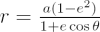
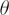
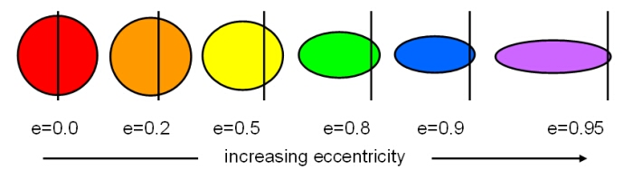

The orbital eccentricity (or eccentricity) is a measure of how much an elliptical orbit is ‘squashed’. It is one of the orbital elements that must be specified in order to completely define the shape and orientation of an elliptical orbit.
The equation of an ellipse in polar coordinates is:

where a is the semi-major axis, r is the radius vector,

is the true anomaly (measured anticlockwise) and e is the eccentricity. An ellipse has an eccentricity in the range 0 < e < 1, while a circle is the special case e=0.
Elliptical orbits with increasing eccentricity from e=0 (a circle) to e=0.95. For a fixed value of the semi-major axis, as the eccentricity increases, both the semi-minor axis and perihelion distance decrease.